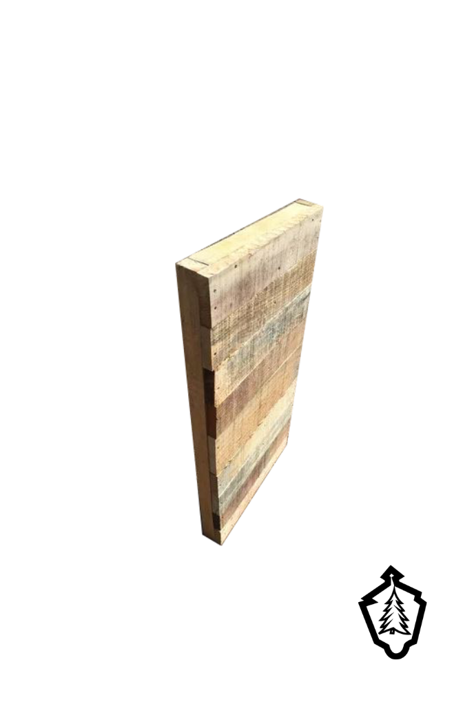
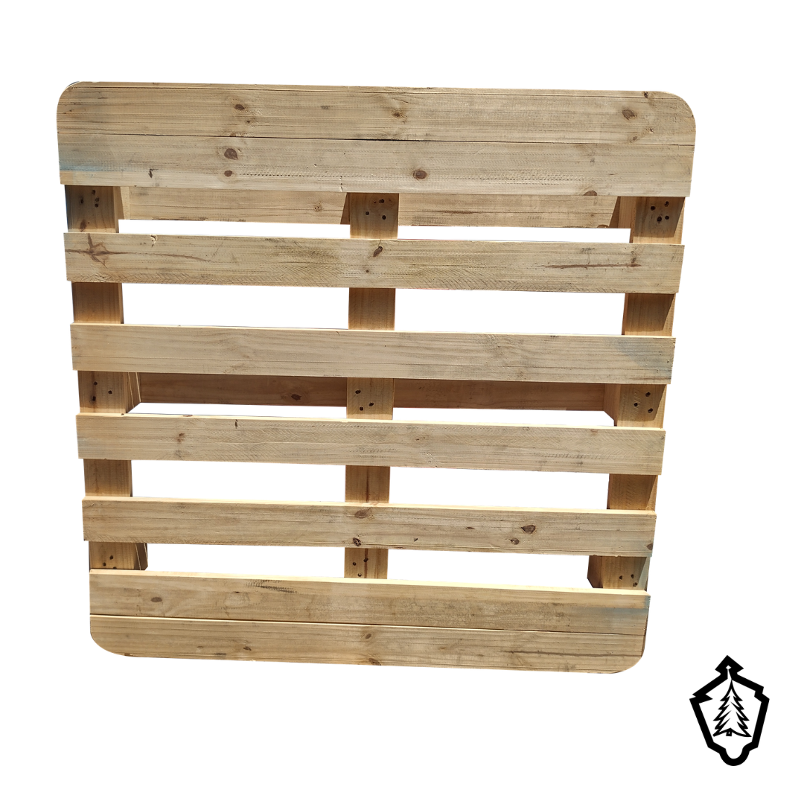
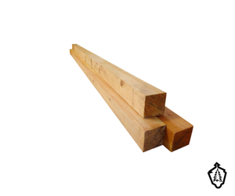
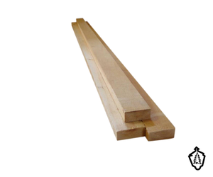
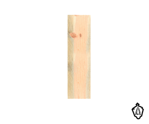

En Maderería El Farolito nos especializamos exclusivamente en la venta por pieza y mayoreo de madera para cimbra a precio directo de fábrica. Nuestro catálogo está diseñado para contratistas, albañiles y particulares en Querétaro y Corregidora que buscan la mejor calidad en tarima de cimbra, tarima industrial, barrote de pino, polín estructural y tabla de alta resistencia. Nos comprometemos a brindarte materiales confiables para tus obras y un servicio al cliente excepcional, asegurando que encuentres la tarima para cimbra a precio accesible y con entrega inmediata para llevar tu proyecto al siguiente nivel. CONTÁCTANOS HOY y descubre cómo podemos colaborar para hacer realidad tus ideas.
PRODUCTOS

Tarima para Cimbra
Tarima para cimbra resistente y de alta durabilidad para obras residenciales e industriales. Ver más

Tarima Industrial
Tarima industrial para almacenamiento y carga pesada en bodegas. Ver más

Polín de Madera
Polín de madera ideal para soporte estructural, vigas y cimbra en obras residenciales. Ver más

Barrote de Madera
Barrote de madera ideal para marcos, refuerzos de cimbra y estructuras ligeras. Ver más

Tabla de Madera
Tabla de madera. Excelente opción individual. Ver más